Sesión 1: Planteando y respondiendo preguntas con datos.
Curso: Análisis de datos
Magíster en Data Science - Universidad del Desarrollo
Contenidos:
1. El proceso de análisis de datos
- Visión general
- Las metodologías de análisis que veremos en el curso
- Adquisición y almacenamiento de los datos
- Preparación de los datos
- Preguntando a los datos
- Abstrayendo la realidad.
- Planteamiento de preguntas.
- El rol de las hipótesis.
2. Respondiendo desde los datos: Pruebas de hipótesis
- Conceptos Básicos de Pruebas de Hipótesis:
- Definición de hipótesis nula y alternativa.
- Intervalos de confianza.
- Niveles de significancia y p-values.
- Errores tipo I y tipo II.
- Tipos de Pruebas de Hipótesis:
- Pruebas t para comparación de medias.
- Pruebas chi-cuadrado para variables categóricas.
- Pruebas ANOVA para comparación de múltiples grupos.
- Interpretación de Resultados:
3. Buenas prácticas en análisis de datos
- Desafíos y Consideraciones:
- Privacidad y seguridad de los datos.
- Limpieza y transformación durante la preparación de datos.
- Reproducibilidad y Control de Versiones (GIT):
- Importancia de mantener un registro de los cambios en los datos.
- Uso de sistemas de control de versiones como GIT para rastrear cambios.
- Aplicación de control de versiones en proyectos de preparación de datos.
El proceso de la ciencia de datos
En el mundo actual, la generación y recopilación de datos se ha vuelto más accesible y significativa que nunca antes.
El proceso de transformar estos datos crudos en información útil y significativa es fundamental.
El proceso de la ciencia de datos

El proceso de la ciencia de datos
En este curso nos enfocaremos en:
- La preparación de los datos
- Análisis mediante modelos de regresión
El objetivo: dar valor
- Esto con el objetivo de responder preguntas desde los datos, que provean información valiosa.

Adquisición de datos:
El primer paso en el proceso de análisis de datos implica la adquisición y el almacenamiento de los datos.
Esto se refiere a la recolección de los datos necesarios para abordar una pregunta o problema en particular.
Puede implicar la recopilación de datos de fuentes diversas, como bases de datos, archivos CSV, páginas web o incluso sensores en tiempo real.
Fuentes de datos comunes I
Existen tantas fuentes de datos, como podríamos imaginar…
- Encuestas y Cuestionarios:
- Diseño y administración de encuestas para recopilar datos directamente de los participantes.
- Permite obtener información específica y detallada según las preguntas planteadas.
- Experimentos Controlados:
- Diseño de experimentos para recopilar datos bajo condiciones controladas.
- Útil para establecer relaciones causales y evaluar efectos de cambios controlados.
Fuentes de datos comunes II
- Observación y Sensores:
- Uso de sensores y dispositivos para capturar datos en tiempo real.
- Ampliamente utilizado en aplicaciones IoT (Internet of Things) para monitorizar y recopilar información.
- Utilización de sensores en dispositivos móviles y wearables para recopilar datos de ubicación, salud y actividad.
- Recopilación de Datos Existentes:
- Utilización de datos ya recopilados y disponibles en bases de datos o fuentes públicas.
- Reduce el tiempo y costo de recopilación, pero puede tener limitaciones en términos de calidad y relevancia.
Fuentes de datos comunes III
- Web Scraping (Web Scrapping):
- Extracción de datos de sitios web utilizando herramientas y técnicas automatizadas.
- Permite recopilar información no estructurada de manera eficiente, pero requiere atención a la ética y términos de uso.
- Acceso a APIs (Application Programming Interfaces):
- Interacción programática con sistemas y servicios para obtener datos en tiempo real.
- Común en la obtención de datos de redes sociales, información climática, finanzas, entre otros.
Fuentes de datos comunes IV
- Colaboración y Participación Comunitaria:
- Colaboración con comunidades y grupos para recopilar datos de manera colectiva.
- Puede ser útil para proyectos de mapeo colaborativo, ciencia ciudadana y recopilación de información local.
- Data Lakes y Almacenamiento en la Nube:
- Almacenamiento de grandes volúmenes de datos sin estructura definida en sistemas de almacenamiento en la nube.
- Facilita la recopilación y posterior análisis de datos heterogéneos.
- Usualmente se accede a través de querys SQL
Proyecto
Datos disponibles
En nuestro proyecto vamos a usar datos de tres posibles fuentes:
- Datos públicos sobre educación chilena
- Datos públicos sobre adjudicaciones municipales
- Datos publicos sobre individuos en comunas chilenas (encuesta Casen)
- Datos sobre crecimiento de paises y complejidad económica
Veamos como acceder algunos de estos datos.
Ejemplo: Encuesta Casen
Datos públicos
La Encuesta de Caracterización Socioeconómica Nacional (CASEN), se realuza en chile:
- Objetivo: recopilar información detallada sobre la situación socioeconómica de los hogares y las personas en el país.
- Esta encuesta se lleva a cabo de manera periódica y abarca una amplia variedad de temas, como ingresos, educación, empleo, salud, vivienda y otros aspectos.
- Se utiliza para informar políticas públicas, tomar decisiones informadas y analizar la evolución de indicadores sociales a lo largo del tiempo.
- Sitio Web oficial
Encuesta Casen
Ejemplo
Si tenemos los datos alojados en una dependencia, simplemente los cargamos. . . .
| folio | o | id_persona | region | comuna | zona | expr | edad | sexo | tot_per | ... | esc2 | educ | o1 | yaut | yauth | yautcor | yautcorh | ytrabajocor | ytrabajocorh | yae | |
|---|---|---|---|---|---|---|---|---|---|---|---|---|---|---|---|---|---|---|---|---|---|
| 0 | 1.101100e+11 | 1 | 5 | Región de Tarapacá | Iquique | Urbano | 67 | 34 | Mujer | 2 | ... | 12.0 | Media humanista completa | No | 220000.0 | 300000 | 220000.0 | 300000 | 150000.0 | 150000.0 | 240586.0 |
| 1 | 1.101100e+11 | 2 | 6 | Región de Tarapacá | Iquique | Urbano | 67 | 4 | Mujer | 2 | ... | NaN | Sin educación formal | NaN | 80000.0 | 300000 | 80000.0 | 300000 | NaN | 150000.0 | 240586.0 |
| 2 | 1.101100e+11 | 2 | 31 | Región de Tarapacá | Iquique | Urbano | 67 | 5 | Mujer | 3 | ... | NaN | Básica incompleta | NaN | 25000.0 | 941583 | 25000.0 | 941583 | NaN | 891583.0 | 439170.0 |
| 3 | 1.101100e+11 | 1 | 32 | Región de Tarapacá | Iquique | Urbano | 67 | 45 | Hombre | 3 | ... | 15.0 | Técnico nivel superior incompleta | Sí | 889500.0 | 941583 | 889500.0 | 941583 | 889500.0 | 891583.0 | 439170.0 |
4 rows × 22 columns
Encuesta Casen
Ejemplo
- Una vez cargados los datos, debemos proceder a su limpieza y exploración, para ser preparados para analizarlos.
- De esto se tratará la siguiente sesión del curso.
Datos desde la API del Banco Mundial
Ejemplo
Otra opción es que los datos estén en una API:
#pandas remote data access support for calls to the World Bank Indicators API
from pandas_datareader import data, wb
# para instalar: conda install pandas-datareader
# o pip install pandas-datareader
#Revisemos que indicadores hay disponibles.
# En este caso revisare de PIB (GDP en ingés),
# pero se pueden explorar muchas más opciones.
wb.search('gdp')| id | name | unit | source | sourceNote | sourceOrganization | topics | |
|---|---|---|---|---|---|---|---|
| 688 | 6.0.GDP_current | GDP (current $) | LAC Equity Lab | GDP is the sum of gross value added by all res... | b'World Development Indicators (World Bank)' | Economy & Growth | |
| 689 | 6.0.GDP_growth | GDP growth (annual %) | LAC Equity Lab | Annual percentage growth rate of GDP at market... | b'World Development Indicators (World Bank)' | Economy & Growth | |
| 690 | 6.0.GDP_usd | GDP (constant 2005 $) | LAC Equity Lab | GDP is the sum of gross value added by all res... | b'World Development Indicators (World Bank)' | Economy & Growth | |
| 691 | 6.0.GDPpc_constant | GDP per capita, PPP (constant 2011 internation... | LAC Equity Lab | GDP per capita based on purchasing power parit... | b'World Development Indicators (World Bank)' | Economy & Growth |
Datos desde la API del Banco Mundial
Ejemplo
| iso3c | iso2c | name | region | adminregion | incomeLevel | lendingType | capitalCity | longitude | latitude | |
|---|---|---|---|---|---|---|---|---|---|---|
| 0 | ABW | AW | Aruba | Latin America & Caribbean | High income | Not classified | Oranjestad | -70.0167 | 12.5167 | |
| 1 | AFE | ZH | Africa Eastern and Southern | Aggregates | Aggregates | Aggregates | NaN | NaN | ||
| 2 | AFG | AF | Afghanistan | South Asia | South Asia | Low income | IDA | Kabul | 69.1761 | 34.5228 |
| 3 | AFR | A9 | Africa | Aggregates | Aggregates | Aggregates | NaN | NaN | ||
| 4 | AFW | ZI | Africa Western and Central | Aggregates | Aggregates | Aggregates | NaN | NaN |
Datos desde la API del Banco Mundial
Ejemplo
#sabemos que queremos Chile, asi que busquemos su info
countries[ countries['name'] == 'Chile' ]
# Descarguemos la data desde la API del banco mundial a un dataframe
df_GPDpc_Chile = wb.download(
#Use the indicator attribute to identify which indicator or indicators to download
indicator='NY.GDP.PCAP.KD',
#Use the country attribute to identify the countries you want data for
country=['CL'],
#Identify the first year for which you want the data, as an integer or a string
start='1980',
#Identify the last year for which you want the data, as an integer or a string
end=2020
)
df_GPDpc_Chile.info()- Observar que este es un data frame con dos índices: pais y año.
<class 'pandas.core.frame.DataFrame'>
MultiIndex: 41 entries, ('Chile', '2020') to ('Chile', '1980')
Data columns (total 1 columns):
# Column Non-Null Count Dtype
--- ------ -------------- -----
0 NY.GDP.PCAP.KD 41 non-null float64
dtypes: float64(1)
memory usage: 2.0+ KBDatos desde la API del banco mundial
Ejemplo
Data frame con los datos de Chile, entre 1980 y 2020.
Datos desde la API del Banco Mundial
Ejemplo
Si quisieramos, por simplicidad quedarnos solo con el indice del año y reordenar el dataframe:
| NY.GDP.PCAP.KD | |
|---|---|
| year | |
| 1980 | 4694.337113 |
| 1981 | 4928.563103 |
| 1982 | 4322.647868 |
| 1983 | 4047.790234 |
| 1984 | 4154.496068 |
Datos desde la API del banco mundial
Ejemplo
Ahora, realicemos un grafico rápido con nuestros datos:
Taller de aplicación 1
Pregunta 1 - Bajando y formateando datos del Banco Mundial
Replique el ejemplo práctico de importar datos desde la API del Banco Mundial y empezar la base para su análisis de series de tiempo.
Importe la serie de GDP total Y Percapita para otro país serie desde la API del Banco mundial, muestre sus principales características y realice un grafico.
¿pareciera haber tendencias?
Preguntando a los datos
¿Cómo plantear preguntas y formular hipótesis en el contexto del análisis de datos?
- La formulación de preguntas relevantes que se puedan responder mediante la exploración y el examen de los datos disponibles.
- Pueden surgir de la necesidad de resolver un problema, entender un fenómeno o explorar patrones en los datos.
- Un buen planteamiento de preguntas es crucial, ya que guiará todo el proceso de análisis.
Abstrayendo la realidad

El proceso de abstraer la realidad
Preguntas e hipótesis:
- Una hipótesis es una afirmación, verificable con evidencia.
- En este sentido, para toda pregunta podemos responderla mediante hipótesis.
- Para responder a las preguntas en el contexto de datos, es común formular hipótesis nulas y alternativas.
Preguntas e hipótesis:
- La hipótesis nula es aquella que propone que algun parámetro toma cierto valor.
- Este generlamente es un punto de verdad.
- Si bien, con datos no podemos corroborar que algo es cierto, si podemos dar evidencia de que no es cierto.
- En general, planteamos el problema de tal manera que podamos rechazar la hipótesis nula, en favor de otra que llamamos alternatiba.
Preguntas e hipótesis:
Prueba de significancia
- Quizas, la hipotesis nula más famosa es la prueba de “significancia”.
- En esta se propone que un parámetro (muchas veces un efecto, o correlación) es 0,
- es decir, plantea que no hay efecto o relación entre las variables
- mientras que la hipótesis alternativa sugiere que sí existe una relación o efecto significativo.
Preguntas e hipótesis:
Una guía clave para el análisis
- Son fundamentales para establecer una base objetiva para el análisis y para evaluar las evidencias encontradas en los datos.
- El proceso de plantear preguntas y formular hipótesis es el primer paso en el análisis de datos, ya que establece una guía clara para el enfoque y la dirección del trabajo.
- Al identificar preguntas y establecer hipótesis, se crea un marco sólido que orientará la exploración y el análisis de los datos disponibles.
Taller de aplicación 1
Pregunta 2 - Investigando sobre países:
Considere que tenemos los datos del banco mundial, del país que selecciono anteriormente, y desea aprender sobre alguna característica de dicho país en el periodo.
Escriba una pregunta de investigación que se pueda responder con los datos disponibles.
- ¿Cómo definiria la variable aleatoria relevante?
- ¿Qué hipótesis podria responder su pregunta?
Respondiendo desde los datos
Inferencia estadística
Inferencia se refiere al proceso de hacer generalizaciones de una población a partir de una muestra de esa población.
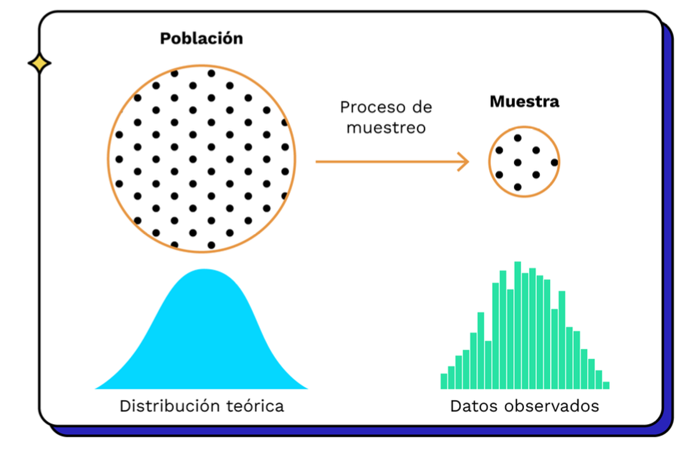Población y Muestra
Respondiendo desde los datos
Inferencia estadística
- Si tenemos un sub-conjunto de datos representativos de una población
- podemos utilizar métodos estadísticos
- para sacar conclusiones sobre las características
- Y propiedades de esa población en su totalidad.
Respondiendo desde los datos
Inferencia estadística
El proceso de inferencia estadística se basa en el principio de que una muestra bien s eleccionada puede proporcionar información valiosa sobre la población en general.
El uso de la inferencia estadística es fundamental, especialmente si es impracticable o costoso analizar cada elemento de una población en particular.
Estadígrafos
Funciones que aproximan parámetros

Estadigrafos
Estadígrafos
son variables aleatorias
- Dado que por cada muestra que tenemos, vamos a calcular un estadígrafo este es en si mismo una variable aleatoria.
- Tiene su propia distribución, media y varianza!

Estadígrafos
los más comunes
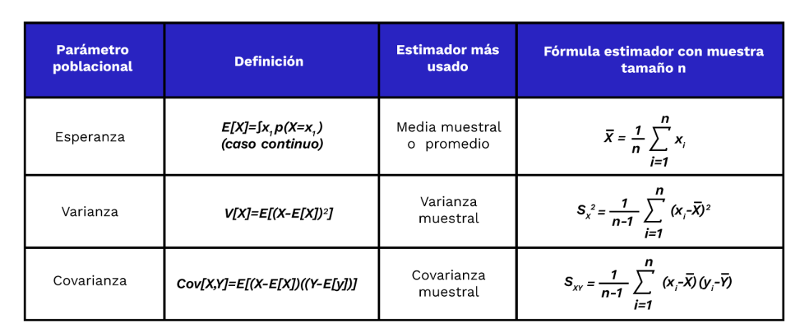Estadigrafos más comunes
Estadígrafos y parámetros
Conectados por el Teorema del Límite central
La distribución de las medias muestrales de una población se aproxima a una distribución normal
Independientemente de la forma de la distribución original de la población.
Este teorema es esencial en inferencia estadística y tiene amplias aplicaciones en análisis de datos y toma de decisiones.
Estadígrafos y parámetros
Conectados por el Teorema del Límite central
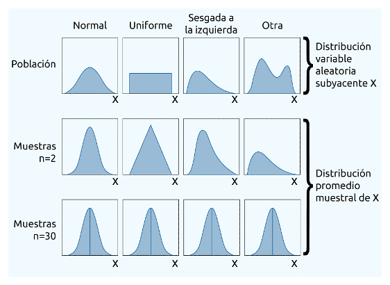La media muestral se distribuye normal, sin importar la distribución de la variable subyacente
Estadígrafos y parámetros
Conectados por el Teorema del Límite central
Formalmente: \[ \bar{x} \sim_a N\left(\mu, \frac{\sigma}{\sqrt{n}}\right)\]
- Sea x con media μ y desviación estándar σ finitas.
Si tomamos muestras aleatorias de tamaño n de esta población y calculamos la media muestral de cada muestra
Las medias muestrales se aproximará a una distribución normal con media μ y desviación estándar σ/√n.
Estadígrafos y parámetros
Conectados por el Teorema del Límite central
Formalmente: \[ \bar{x} \sim_a N\left(\mu, \frac{\sigma}{\sqrt{n}}\right)\]
- Con este teorema, podemos construir inferencia de a partir de {x} indirectamente.
- Intervalos de confianza
- Pruebas de hipótesis
- p-valor
Estadígrafos y parámetros
Intervalos de confianza

Estadígrafos y parámetros
Intervalos de confianza

Estadígrafos y parámetros
Intervalos de confianza
Un intervalo de confianza contiene los posibles valores del estimador, entre un límite inferior y un límite superior, con cierta probabilidad.
Este intervalo es aleatorio, porque \(\bar{y}\) es diferente en cada muestra.
Estadígrafos y parámetros
Intervalos de confianza
Matemáticamente, para cada muestra podemos construir un intervalo.
\[ P\left( \bar{y}-\frac{1.96\sigma }{\sqrt{n}} < \mu < \bar{y} + \frac{1.96\sigma }{\sqrt{n}} \right) = 0.95 \]
\[ \left(\bar{y} - \frac{c\times S}{\sqrt{n}}, \bar{y} + \frac{c\times S}{\sqrt{n}} \right) \]
Estadígrafos y parámetros
Intervalos de confianza
- Con 20 muestras, tenemos 20 intervalos. 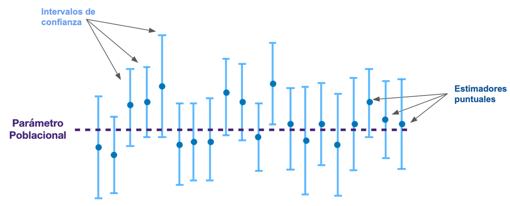
Estadígrafos y parámetros
Intervalos de confianza - Interpretación
Pensemos en un 95% de confianza (un valor usual):
- Esto quiere decir, que si se repitiera este ejercicio muchas veces y construyéramos un intervalo de esta forma…
- el 95% de ellos contendría el verdadero parámetro poblacional.
- No significa que con 95% de certeza el parámetro está exactamente en estos valores.
Estadígrafos y parámetros
Intervalos de confianza - Interpretación
- Al 95% de confianza con 20 intervalos 19 contendrán el parámetro.

Estadígrafos y parámetros
Pruebas de hipótesis
Una forma de verificar hipotesis sobre los parámetros es mediante el contraste de hipótesis.
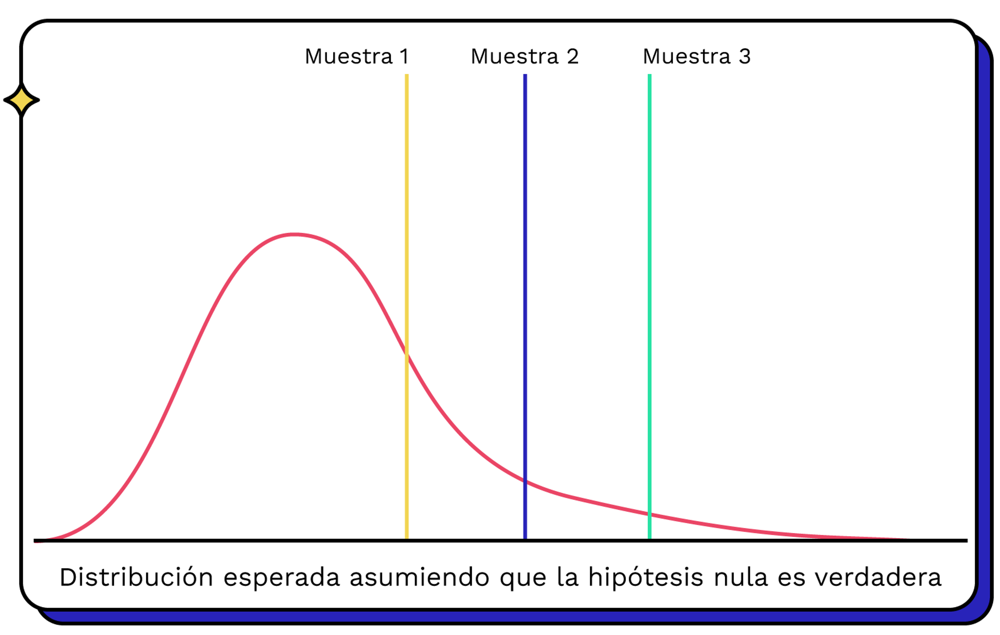Estadígrafos y parámetros
Pruebas de hipótesis
Empezamos suponiendo que hay una distribución conocida para el estadígrafo, centrada en un valor específico.
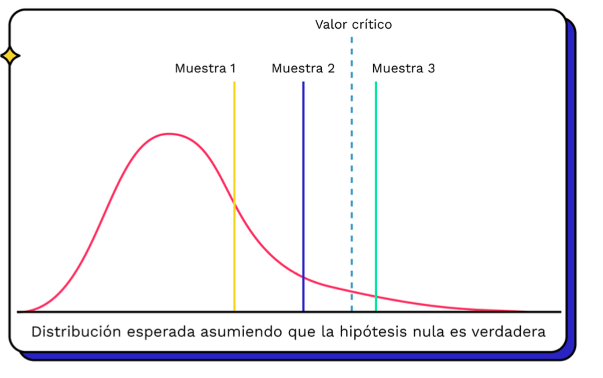Estadígrafos y parámetros
Pruebas de hipótesis
Y nos preguntamos, si esto fuea verdad ¿qué tan probable es la muestra que tengo?
Estadígrafos y parámetros
Pruebas de hipótesis
Llamamos la hipótesis a probar Ho, y su alternativa H1.
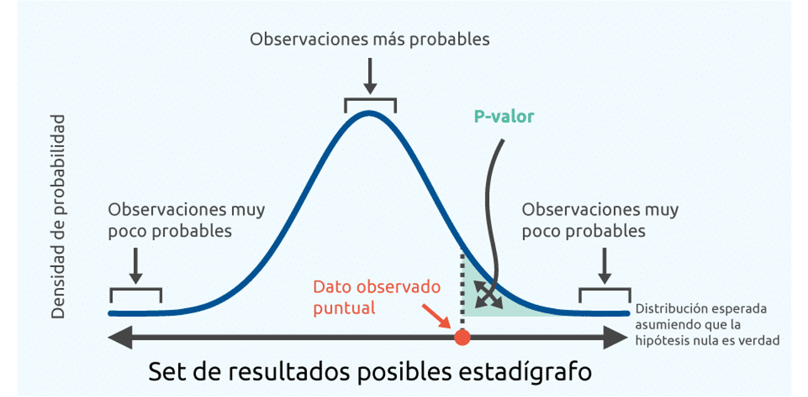Estadígrafos y parámetros
Errores y P-valor
Asociada esta prueba, entonces, hay asociados dos tipos de errores:

Estadígrafos y parámetros
Errores y P-valor
Se elige nivel de significancia de contraste (α) = probabilidad de cometer error Tipo I. Típicamente α = 0,01, 0,05, 0,10.
Definimos la prueba de hipótesis de significancia como aquella que indica si un estimador \(\hat{T}\) es 0.
\[ H_0: T =0\text{ vs }H_1: T \neq 0 \]
Estadígrafos y parámetros
Errores y P-valor
El Valor de probabilidad (ó p-valor) es el nivel probabilidad más alto para el cual no podemos rechazar la hipótesis nula de la prueba de significancia.
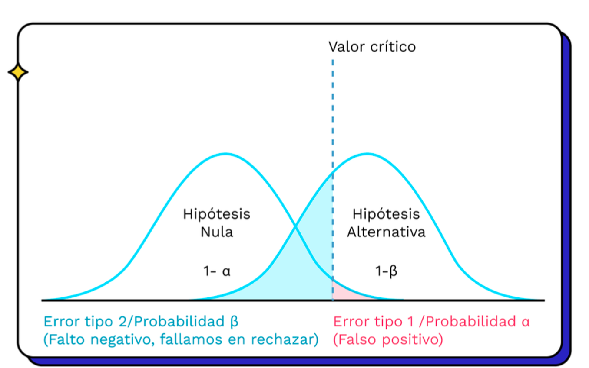Ejemplo de aplicación
Ejemplo: Peso de los Pingüinos Palmer
Los datos “Palmer Penguins” son un conjunto que detalla medidas morfológicas y características de tres especies de pingüinos: Adelie, Gentoo y Chinstrap.
Recopilados por el Dr. Bill Link y su equipo. (Horst AM, Hill AP, Gorman KB (2020). palmerpenguins: Palmer Archipelago (Antarctica) penguin data. doi:10.5281/zenodo.3960218, R package version 0.1.0, https://allisonhorst.github.io/palmerpenguins/index.html)
Ejemplo: Peso de los Pingüinos Palmer

| species | island | bill_length_mm | bill_depth_mm | flipper_length_mm | body_mass_g | sex | |
|---|---|---|---|---|---|---|---|
| 0 | Adelie | Torgersen | 39.1 | 18.7 | 181.0 | 3750.0 | Male |
| 1 | Adelie | Torgersen | 39.5 | 17.4 | 186.0 | 3800.0 | Female |
| 2 | Adelie | Torgersen | 40.3 | 18.0 | 195.0 | 3250.0 | Female |
| 3 | Adelie | Torgersen | NaN | NaN | NaN | NaN | NaN |
| 4 | Adelie | Torgersen | 36.7 | 19.3 | 193.0 | 3450.0 | Female |
| 5 | Adelie | Torgersen | 39.3 | 20.6 | 190.0 | 3650.0 | Male |
Ejemplo: Peso de los Pingüinos Palmer
- En el contexto de los pingüinos y el peso de su población:
- podríamos tomar una muestra de pingüinos
- y calcular un intervalo de confianza para el peso promedio.
- Esto nos daría una estimación del peso promedio de la población total, junto con la confianza en que este valor estimado es preciso.
Ejemplo: Peso de los Pingüinos Palmer
La elección de la muestra, la interpretación de los resultados y el nivel de confianza seleccionado son aspectos cruciales para realizar inferencias precisas y significativas.
Relicemos algunos ejemplos de pruebas de hipótesis, sobre el peso de los pingüinos.
Por ahora, pensemos que nuestra información es la población completa
Ejemplo: Peso de los Pingüinos Palmer
Calcularemos el promedio muestral y lo veremos en el contexto de los datos observados: . . .
import matplotlib.pyplot as plt
# Calcular el promedio del peso de los pingüinos
promedio_peso = penguins['body_mass_g'].mean()
# Crear un histograma de la distribución del peso con el promedio
plt.figure(figsize=(10, 6))
sns.histplot(data=penguins, x='body_mass_g', bins=20, kde=True)
plt.axvline(x=promedio_peso, color='red', linestyle='dashed', label='Promedio')
plt.title('Distribución de Peso de Pingüinos')
plt.xlabel('Masa Corporal (g)')
plt.ylabel('Frecuencia')
plt.legend()
plt.show()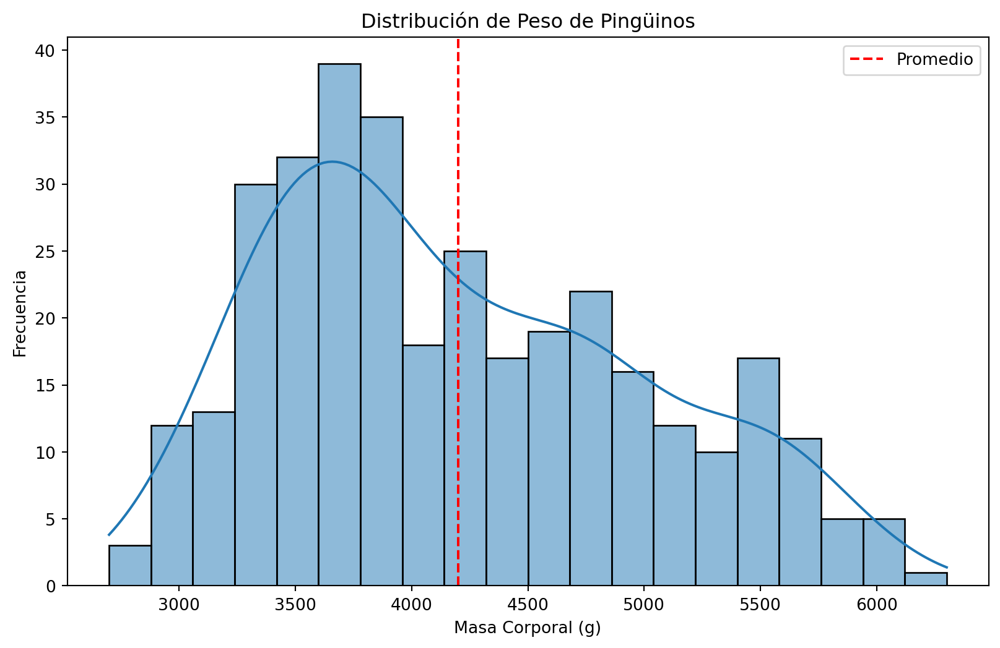
Ejemplo: Peso de los Pingüinos Palmer
Nuestra idea de la inferencia, es aprovechar las propiedades del promedio muestral.
De que es el promedio muestral el que se distribuye normal, su media es la media poblacional y conocemos sus características.
Por ejemplo, consideremos que de esta población de pingüinos obtenemos 1000 muestras de 40 individuos cada una.
Si graficamos sus medias, podremos ver que estas se distribuyen aproximadamente normal.
- Si reducimos el tamaño de muestra, más nos alejamos de la distribución normal.
- Si reducimos el número de repeticiones tambieé.
Ejemplo: Peso de los Pingüinos Palmer
import numpy as np
# Definir el tamaño de cada muestra y la cantidad de muestras
tamano_muestra = 50
cantidad_muestras = 10000
# Crear una lista para almacenar las medias de cada muestra
medias_muestras = []
# Realizar el muestreo y cálculo de medias para cada muestra
for _ in range(cantidad_muestras):
muestra = np.random.choice(penguins['body_mass_g'], size=tamano_muestra, replace=False)
media_muestra = np.mean(muestra)
medias_muestras.append(media_muestra)
# Calcular el promedio de los promedios de las muestras
promedio_promedios = np.mean(medias_muestras)
# Crear el gráfico de las medias de las muestras
plt.figure(figsize=(10, 6))
plt.hist(medias_muestras, bins=20, edgecolor='black', alpha=0.7)
plt.axvline(x=promedio_promedios, color='red', linestyle='dashed', label='Promedio de Promedios')
plt.title('Distribución de Medias de Muestras')
plt.xlabel('Media de Muestra de Peso (g)')
plt.ylabel('Frecuencia')
plt.legend()
plt.show()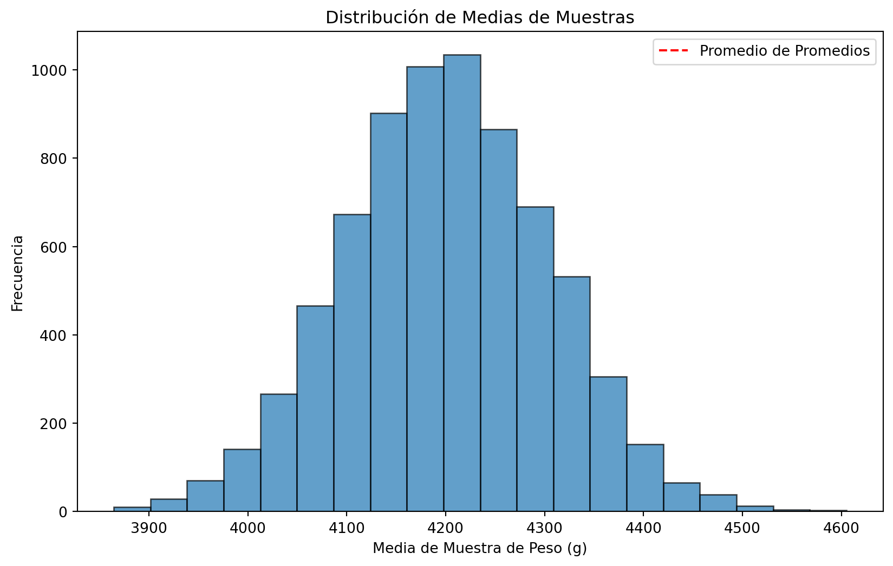
Intervalo de confianza
Obtengamos una muestra y calculemos un intervalo de confianza:
import seaborn as sns
import numpy as np
import scipy.stats as stats
# Obtener una muestra simple de 40 pingüinos
sample_size = 40
sample = np.random.choice(penguins["body_mass_g"], size=sample_size)
# Calcular el error estándar de la media muestral
sample_std = np.std(sample, ddof=1) # Usar ddof=1 para calcular la desviación estándar muestral
standard_error = sample_std / np.sqrt(sample_size)
# Nivel de confianza (por ejemplo, 95%)
confidence_level = 0.95
# Calcular el margen de error
margin_of_error = stats.t.ppf((1 + confidence_level) / 2, df=sample_size - 1) * standard_error
# Calcular el intervalo de confianza
sample_mean = np.mean(sample)
confidence_interval = (sample_mean - margin_of_error, sample_mean + margin_of_error)
print("Intervalo de Confianza para el Peso:")
print(confidence_interval)Intervalo de confianza
Obtengamos una muestra y calculemos un intervalo de confianza:
El resultado será un rango de valores dentro del cual es probable que se encuentre el verdadero peso promedio de los pingüinos en la población, con un nivel de confianza del 95%.
¿Como nos fue? ¿Contiene al verdadero valor?
Comparaciones de grupos
Ahora consideremos que tenemos grupos que queremos comparar.
Si hacemos una grafica de distribución de tamaño por especie y sexo, podriamos empezar a analizar diferencias entre los grupos.
# Crear la tabla de doble entrada por tipo y sexo de los pinguinos
tabla_doble_entrada = penguins.groupby(['species', 'sex'])['body_mass_g'].agg(['mean', 'var']).reset_index()
# Renombrar las columnas para mayor claridad
tabla_doble_entrada.rename(columns={'mean': 'Promedio', 'var': 'Varianza'}, inplace=True)
# Mostrar la tabla de doble entrada
print(tabla_doble_entrada) species sex Promedio Varianza
0 Adelie Female 3368.835616 72565.639269
1 Adelie Male 4043.493151 120278.253425
2 Chinstrap Female 3527.205882 81415.441176
3 Chinstrap Male 3938.970588 131143.605169
4 Gentoo Female 4679.741379 79286.335451
5 Gentoo Male 5484.836066 98068.306011Comparaciones de grupos
Podriamos querer saber si el peso es diferente para los pinguinos de la especie Adelie, para diferentes sexos:
Pregunta de Prueba de Hipótesis: ¿Existe una diferencia significativa en el peso promedio entre los pingüinos machos y las pingüinas hembras en la especie “Adelie”?
Comparaciones de grupos
Hipótesis Nula (H0):
No hay diferencia significativa en el peso promedio entre los pingüinos machos y las pingüinas hembras en la especie “Adelie”.
Hipótesis Alternativa (H1):
Existe una diferencia significativa en el peso promedio entre los pingüinos machos y las pingüinas hembras en la especie “Adelie”.
Comparaciones de grupos
- Para probar esta hipótesis, podrías utilizar una prueba de hipótesis para comparar las medias de las muestras de peso de los pingüinos machos y hembras en la especie “Adelie”.
import matplotlib.pyplot as plt
# Cargar el conjunto de datos "Penguins"
penguins = sns.load_dataset("penguins")
# Filtrar los pingüinos de la especie "Adelie"
adelie_penguins = penguins[penguins['species'] == 'Adelie']
# Crear un histograma para la distribución de peso por sexo
plt.figure(figsize=(10, 6))
sns.histplot(data=adelie_penguins, x='body_mass_g', hue='sex', bins=20, kde=True)
plt.title('Distribución de Peso por Sexo para Pingüinos Adelie')
plt.xlabel('Masa Corporal (g)')
plt.ylabel('Frecuencia')
plt.legend(title='Sexo')
plt.show()
Comparaciones de grupos
- A simple vista podriamos pensar ambos grupos son diferentes.
- Es más claro si dibujamos el promedio muestral observado.
# Crear un gráfico de densidad con líneas de promedio
plt.figure(figsize=(10, 6))
sns.kdeplot(data=adelie_penguins, x='body_mass_g', hue='sex', fill=True, common_norm=False)
plt.axvline(x=adelie_penguins.groupby('sex')['body_mass_g'].mean()['Female'], color='blue', linestyle='dashed', label='Promedio Femenino')
plt.axvline(x=adelie_penguins.groupby('sex')['body_mass_g'].mean()['Male'], color='orange', linestyle='dashed', label='Promedio Masculino')
plt.title('Densidad de Peso por Sexo para Pingüinos Adelie')
plt.xlabel('Masa Corporal (g)')
plt.ylabel('Densidad')
plt.legend()
plt.show()
Comparaciones de grupos
# Filtrar los pingüinos de la especie "Adelie"
adelie_penguins = penguins[penguins['species'] == 'Adelie']
# Filtrar machos y hembras
machos = adelie_penguins[adelie_penguins['sex'] == 'Male']
hembras = adelie_penguins[adelie_penguins['sex'] == 'Female']
# Realizar la prueba t independiente
t_statistic, p_value = stats.ttest_ind(machos['body_mass_g'], hembras['body_mass_g'], equal_var=False)
# Imprimir resultados
print("Estadística t:", t_statistic)
print("Valor p:", p_value)
# Crear un gráfico de comparación de peso
plt.figure(figsize=(10, 6))
sns.boxplot(data=[machos['body_mass_g'], hembras['body_mass_g']], palette=['blue', 'pink'])
plt.title('Comparación de Peso entre Machos y Hembras de Pingüinos Adelie')
plt.xticks([0, 1], ['Machos', 'Hembras'])
plt.ylabel('Peso (g)')
plt.show()Estadística t: 13.126285923485874
Valor p: 6.402319748031793e-26Comparaciones de grupos
- Finalmente, podriamos querer comparar hembras y machos de diferentes Islas.
- Para esto podriamos usar una prueba ANOVA.
import seaborn as sns
import scipy.stats as stats
# Cargar el conjunto de datos "Penguins"
penguins = sns.load_dataset("penguins")
# Filtrar machos y hembras
machos = penguins[penguins['sex'] == 'Male']
hembras = penguins[penguins['sex'] == 'Female']
# Realizar una prueba ANOVA
result = stats.f_oneway(machos['body_mass_g'], hembras['body_mass_g'])
# Imprimir resultados
print("Estadística F:", result.statistic)
print("Valor p:", result.pvalue)Estadística F: 72.96098633250911
Valor p: 4.897246751596325e-16
Experimentos Aleatorios y pruebas A/B
- Un experimento estadístico busca establecer relaciones causales entre variables y obtener conclusiones sobre su impacto.
- Se diseñan para manipular variables independientes y observar sus efectos en una variable dependiente.
- Los experimentos controlan y manipulan variables para hacer afirmaciones sólidas sobre relaciones causales.
- Las pruebas A/B son comunes en áreas como marketing y diseño de productos.
- En una prueba A/B, se comparan dos grupos de muestra (A y B) para evaluar si la variante B produce cambios significativos en una métrica de interés.
Experimentos Aleatorios y pruebas A/B
Cuidados:
- Pruebas A/B ofrecen evidencia de asociación causal, pero no aseguran causalidad total debido a factores no controlados.
- Experimentos controlados y métodos de diseño sólidos son esenciales para una comprensión completa de la causalidad.
- Pruebas A/B son herramientas poderosas para analizar efectos y comparar opciones en condiciones controladas.
Caso: Aplicación de A/B testing para promoción de Marketing
Enunciado
Imaginemos que trabajamos en una empresa de e-commerce que vende productos electrónicos y queremos aumentar las ventas en una línea de productos específica, como teléfonos móviles.
Para ello, decidimos utilizar una promoción de ventas basada en una ruleta lúdica que ofrecerá descuentos a los clientes que la utilicen.
Para implementar la promoción, primero seleccionamos aleatoriamente un grupo de clientes y les enviamos un correo electrónico
Enunciado
- Los clientes son asignados a uno de los siguientes grupos:
- Control: no les da una promoción (mala suerte, intentalo otra vez)
- Tratamiento 1: 20% de descuento en el producto
- -Tratamiento 2: Un complemento gratuito (carcasa) que tiene un costo para la empresa similar al descuento.
Creación de los datos
import numpy as np
import pandas as pd
import random
#| output: false
# Define una semilla para la generación de números aleatorios
np.random.seed(123)
random.seed(123)
# Crear un vector de 200 valores aleatorios para el grupo de control
control = np.random.choice(["Control"], size=200, replace=True)
# Crear un vector de 200 valores aleatorios para el grupo de tratamiento
tratamiento = np.random.choice(["Treatment 1", "Treatment 2"], size=100, replace=True, p=[0.7, 0.3])
# Crear un vector de número de compras para cada grupo
control_compras = np.random.binomial(5, 0.2, size=200)
tratamiento1_compras = np.random.binomial(5, 0.4, size=100)
tratamiento2_compras = np.random.binomial(5, 0.6, size=100)
# Combinar los vectores en un DataFrame
data = {
'grupo': np.concatenate((control, np.repeat("Treatment", 200))),
'tipo_tratamiento': np.concatenate((np.repeat("Control", 200), np.repeat(["Treatment 1", "Treatment 2"], [100, 100]))),
'ventas': np.concatenate((control_compras, tratamiento1_compras, tratamiento2_compras))
}
ventas_df = pd.DataFrame(data)
# Verificar el DataFrame
ventas_df| grupo | tipo_tratamiento | ventas | |
|---|---|---|---|
| 0 | Control | Control | 1 |
| 1 | Control | Control | 1 |
| 2 | Control | Control | 0 |
| 3 | Control | Control | 0 |
| 4 | Control | Control | 0 |
| ... | ... | ... | ... |
| 395 | Treatment | Treatment 2 | 1 |
| 396 | Treatment | Treatment 2 | 2 |
| 397 | Treatment | Treatment 2 | 1 |
| 398 | Treatment | Treatment 2 | 3 |
| 399 | Treatment | Treatment 2 | 2 |
400 rows × 3 columns
import numpy as np
import pandas as pd
import random
#| echo: false
# Define una semilla para la generación de números aleatorios
np.random.seed(123)
random.seed(123)
# Crear un vector de 200 valores aleatorios para el grupo de control
control = np.random.choice(["Control"], size=200, replace=True)
# Crear un vector de 200 valores aleatorios para el grupo de tratamiento
tratamiento = np.random.choice(["Treatment 1", "Treatment 2"], size=100, replace=True, p=[0.7, 0.3])
# Crear un vector de número de compras para cada grupo
control_compras = np.random.binomial(5, 0.2, size=200)
tratamiento1_compras = np.random.binomial(5, 0.4, size=100)
tratamiento2_compras = np.random.binomial(5, 0.6, size=100)
# Combinar los vectores en un DataFrame
data = {
'grupo': np.concatenate((control, np.repeat("Treatment", 200))),
'tipo_tratamiento': np.concatenate((np.repeat("Control", 200), np.repeat(["Treatment 1", "Treatment 2"], [100, 100]))),
'ventas': np.concatenate((control_compras, tratamiento1_compras, tratamiento2_compras))
}
ventas_df = pd.DataFrame(data)
# Verificar el DataFrame
ventas_df| grupo | tipo_tratamiento | ventas | |
|---|---|---|---|
| 0 | Control | Control | 1 |
| 1 | Control | Control | 1 |
| 2 | Control | Control | 0 |
| 3 | Control | Control | 0 |
| 4 | Control | Control | 0 |
| ... | ... | ... | ... |
| 395 | Treatment | Treatment 2 | 1 |
| 396 | Treatment | Treatment 2 | 2 |
| 397 | Treatment | Treatment 2 | 1 |
| 398 | Treatment | Treatment 2 | 3 |
| 399 | Treatment | Treatment 2 | 2 |
400 rows × 3 columns
Taller de aplicación 1:
Pregunta 3 -Ejemplo AB test en Marketing:
Estudiemos si la promoción fue efectiva en estos datos. Para esto:
- Describa los resultados de la promocion para los diferentes grupos, en terminos de estadisticas descriptivas.
- Compare visualmente los resultados de los diferentes grupos.
- ¿Fue la promocion efectiva? Use una prueba de hipotesis para analizar el grupo tratado y de control.
- ¿Cual de las promociones fue más efectiva? Use una prueba ANOVA.
Buenas prácticas en análisis de datos
Desafíos y Consideraciones:
Importancia de la Adquisición y Almacenamiento de Datos
- La adquisición y el almacenamiento de datos son los cimientos sobre los cuales se construye todo el proceso de análisis.
- La calidad y la confiabilidad de los datos que obtengamos son fundamentales para asegurarnos de que los resultados y conclusiones que extraigamos sean precisos y relevantes.
- Garantía de Calidad y Fiabilidad en la Obtención de Datos: Obtener datos confiables es el primer paso para garantizar que nuestras conclusiones sean sólidas.
Desafíos y Consideraciones:
Importancia de la Adquisición y Almacenamiento de Datos
- Exploración de Diferentes Fuentes de Datos y su Impacto en los Resultados: En el mundo actual, los datos provienen de diversas fuentes: bases de datos, encuestas, sensores, redes sociales, entre otros.
- Cada fuente tiene sus propias características y potenciales sesgos.
- Comprender las diferencias entre estas fuentes y cómo pueden influir en los resultados es crucial para tomar decisiones informadas.
Desafíos y Consideraciones:
Privacidad y Seguridad de los Datos:
- Uno de los aspectos más críticos en el análisis de datos es la privacidad y seguridad de la información.
- Los datos pueden contener información sensible y personal, y es esencial proteger la confidencialidad de las personas y organizaciones involucradas.
Desafíos y Consideraciones:
Privacidad y Seguridad de los Datos:
- Exploraremos prácticas y regulaciones para garantizar que los datos se manejen de manera ética y legal.
- Discutiremos cómo anonimizar los datos, utilizar técnicas de enmascaramiento y seguir las mejores prácticas para resguardar la privacidad de los individuos.
Desafíos y Consideraciones:
Limpieza y Transformación durante la Preparación de Datos:
- La etapa de preparación de datos es crucial para asegurarse de que los datos sean aptos para el análisis.
- Sin embargo, este proceso no está exento de desafíos.
- Los datos pueden contener valores faltantes, duplicados y errores que deben abordarse de manera adecuada.
Desafíos y Consideraciones:
Limpieza y Transformación durante la Preparación de Datos:
- Exploraremos técnicas para identificar y manejar valores atípicos y faltantes, errores de digitación, etc.
- Los invetsigadores toman muchas decisiones en este proceso, que deben ser transparentes.
- Abordar estos desafíos de manera adecuada es esencial para garantizar que nuestras conclusiones sean sólidas, confiables y éticas.
Reproducibilidad y Control de Versiones (GIT):
Key ideas:
- Una documentacion detallada del analisis, de las desiciones tomadas.
- Notebooks pueden ser una buena herramienta inicial.
- Importancia de mantener un registro de los cambios en los datos.
- Uso de sistemas de control de versiones como GIT para rastrear cambios.
- Aplicación de control de versiones en proyectos de preparación de datos.
Uso de Sistemas de Control de Versiones como GIT para Rastrear Cambios:
GIT, un sistema de control de versiones ampliamente utilizado, no solo se aplica al desarrollo de software, sino que también es una herramienta poderosa en el análisis de datos.
Permite rastrear cada modificación realizada en el código y en los documentos, incluidos los notebooks.
Cada cambio es registrado como un “commit”, lo que proporciona un historial completo y auditable de las transformaciones realizadas en los datos.
La aplicación de GIT en proyectos de preparación de datos agrega un nivel adicional de transparencia y colaboració
Uso de Sistemas de Control de Versiones como GIT para Rastrear Cambios:
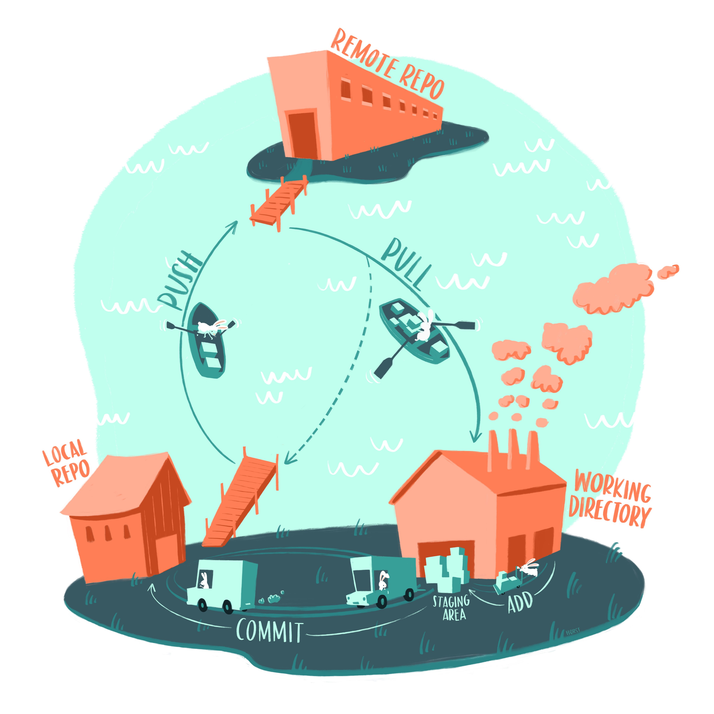Un esquema de git por Allison Horst @allison_horst
Actividad de proyecto
Inicio reproducible
Vamos a empezar el proyecto, dando los primeros pasos considerando que sea reproducible y transparente.
Uno de los productos del proyecto es un notebook de reporte del análisis. Para esto, iremos avanzando desde hoy.
- Defina a su grupo e inscribase.
- Cree un repositorio de Github en el cual van a trabajar, agregue a todos los integrantes como colaboradores y a la profesora (usuario: melanieoyarzun)
- Cree el readme listando a los integrantes del grupo.
- Definan con que base de datos les gustaría trabajar.
- Propongan una o dos preguntas de investigación y las hipotesis que las responderían.
La siguiente sesión, vamos a explorar los datos y empezar los primeros pasos en su análisis.
Curso Análisis de Datos - Sesión 1